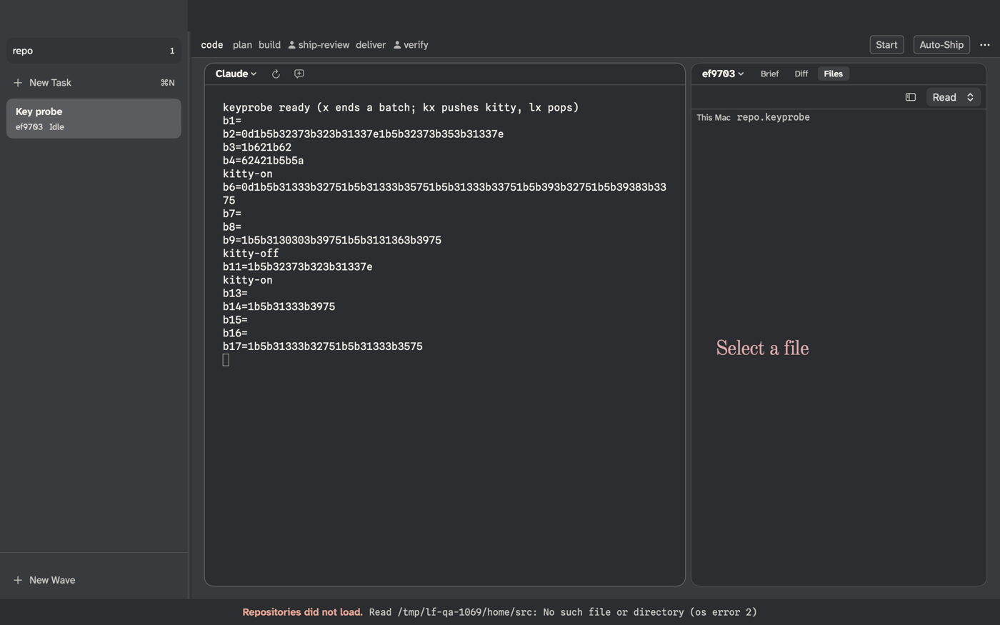
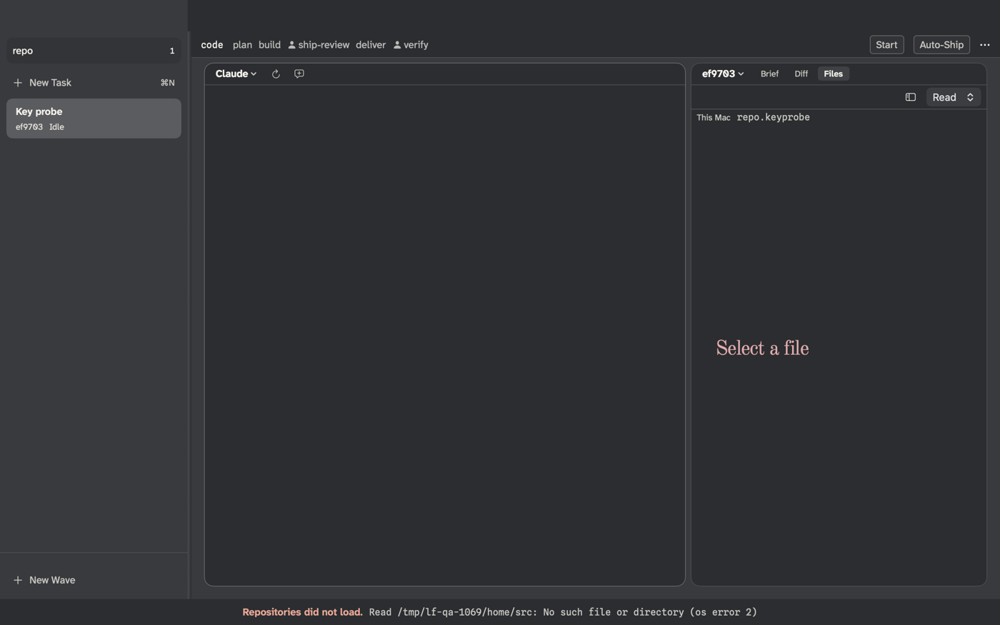
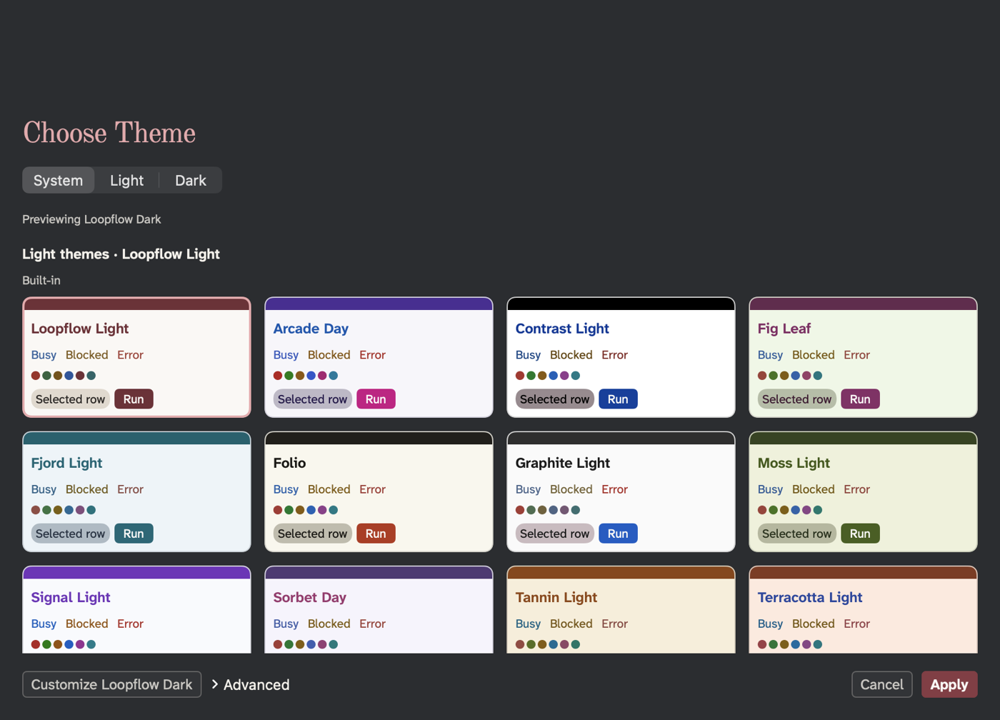

The branch Desktop app (an isolated Dev bundle with the file-driven QA hook) ran on a private Machine
(/tmp/lf-qa-1069) against the branch lf server. A disposable Task had a prepared
Session whose stand-in provider set the tty raw and printed each x-terminated batch of input bytes as hex.
The screen was locked the whole run, so keys were posted as NSEvents into the app's own event
queue. Local monitors, menus and the terminal responder all saw them. No physical keyboard was used.
| # | What I did | What the provider received | |
|---|---|---|---|
| 1 | Legacy mode: Return, Shift-Return, Control-Return | 0d · 1b5b32373b323b31337e · 1b5b32373b353b31337e (CR, CSI 27;2;13~, CSI 27;5;13~), once each | ok |
| 2 | Left and right Option-B (no Ghostty config, US layout) | 1b62 1b62 (Alt on both sides, Ghostty's default) | ok |
| 3 | b, Shift-B, Shift-Tab | 62 42 1b5b5a | ok |
| 4 | Provider pushes Kitty disambiguation; Return, Shift/Control/Option-Return, Shift-Tab, Option-B | 0d · CSI 13;2u · CSI 13;5u · CSI 13;3u · CSI 9;2u · CSI 98;3u | ok |
| 5 | ⌘, over the focused Kitty-mode pane | Settings opened; nothing reached the provider | ok |
| 6 | ⌘K over the pane | Nothing reached the provider. The palette did not draw: its shortcut needs a key window, which a locked screen never has | partial |
| 7 | ⌘D, ⌘T (unbound Ghostty standalone defaults) | CSI 100;9u · CSI 116;9u | ok |
| 8 | ⌘⇧↩ (Zoom Pane) | Nothing reached the provider: Desktop owns it | ok |
| 9 | ⌘↩ | Nothing. The View menu's Zoom Pane (⇧⌘↩) took it | bug → fixed |
| 10 | ⌘E | Nothing. Toggle Browser (⇧⌘E) switched the Session pane to the browser (screenshot below) | bug → fixed |
| 11 | Quit the app, relaunch, open the Task, focus the pane | Same provider process (batch numbers continued from b15). Kitty mode came back: Shift/Control-Return gave CSI 13;2u · CSI 13;5u | ok |
| 12 | After the fix: ⌘↩ with the window asked first, as AppKit does for a key window | CSI 13;9u | ok |
| 13 | After the fix: ⌘, opens Settings; close it; Shift-Return and Option-B in Kitty mode | Settings opened; then CSI 13;2u · CSI 98;3u | ok |
AppKit fires a menu item that requires Shift for the same chord without Shift. A standalone probe showed this
with a bare NSMenu: a ⇧⌘↩ item fires on ⌘↩, and a ⇧⌘E item fires on ⌘E. The branch had freed
super+enter from Ghostty so that ⌘↩ would reach the program, but Zoom Pane took it, and ⌘E took the
Session pane away. GhosttyMetalView.performKeyEquivalent now keeps any chord that no menu item names
exactly, when only a Shift item would take it (GhosttyTerminalShortcut.shadowedByShiftedMenuItem).
Exact menu chords (⌘, ⌘Q ⇧⌘↩ ⇧⌘E) still go to the menu. A headless test covers the rule.
The Session pane after scenarios 1–11 (each line is one batch as hex):

⌘E before the fix: the Session pane became an empty browser.

⌘, over the focused pane opens Settings:

scripts/test_desktop.sh --filter 'GhosttyModifierInputTests|SessionModifierInputTests' # 11 tests passed headless, including the new Shift-menu test; CI repeats
The installed agy requested modifyOtherKeys level 2
(CSI >4;2m), pushed Kitty flags 5 (CSI >5u),
then queried the active flags (CSI ?u).
A private Machine opened a prepared Antigravity Session in the branch's
Desktop terminal view. The launch wrapper opened the installed TUI on an empty
workspace without an initial prompt. The terminal passed
TERM=xterm-256color and COLORTERM=truecolor to the provider.
In a separate PTY with those two values, the installed TUI emitted 26 distinct RGB foreground or background colors during startup and draft editing.
| Desktop input | Visible, unsent agy draft |
|---|---|
| q, Shift-/, Shift-A, x | q?Ax |
| Release the pane, reopen the same Session, repeat | q?Axq?Ax |
The fixture delivered AppKit key-down and key-up events. The byte tests
also checked Shift-/ and Shift-A with only modifyOtherKeys enabled
(?, CSI 27;2;65~) and with both modes active
(?A).
Works now: modified Return, Tab and Option keys reach a held Session with modifiers intact in legacy and Kitty modes, once each, through the app's real event dispatch, and again after the app quits and reopens. Desktop menu shortcuts still win over the focused pane. ⌘↩ and ⌘E reach the program.
Not reached:
Still wrong, worst first: